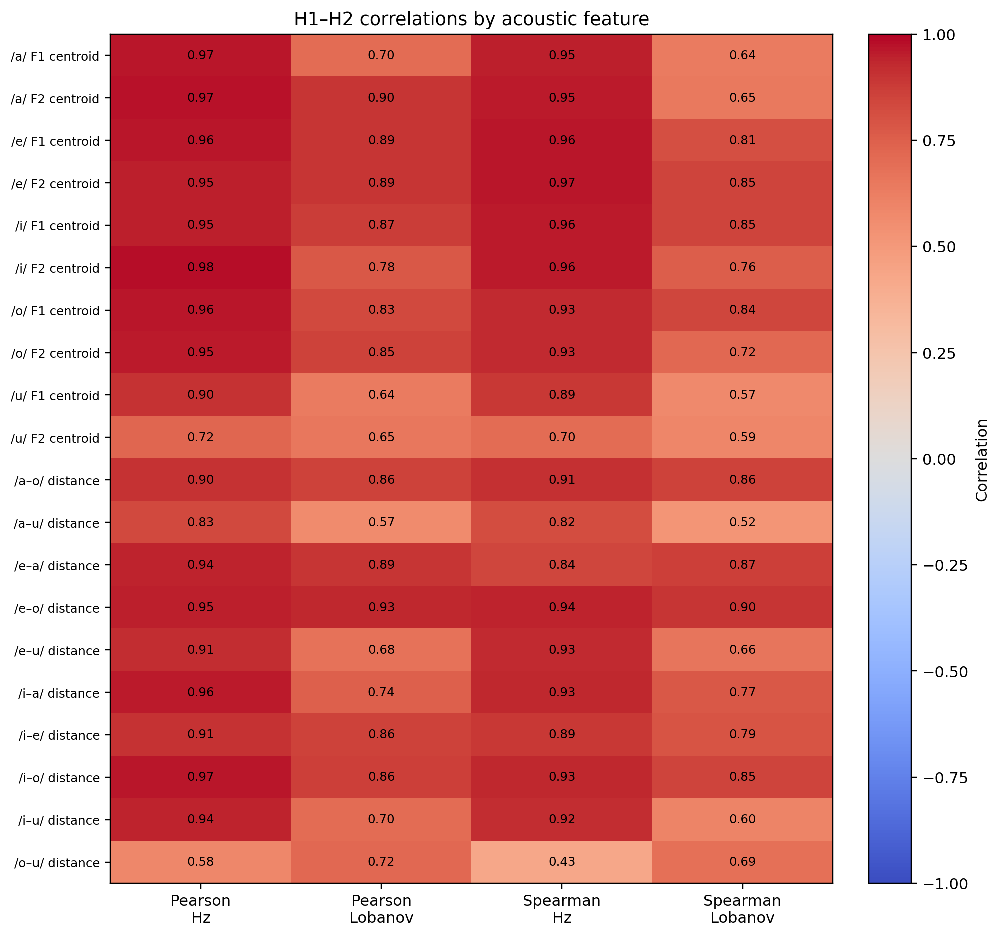
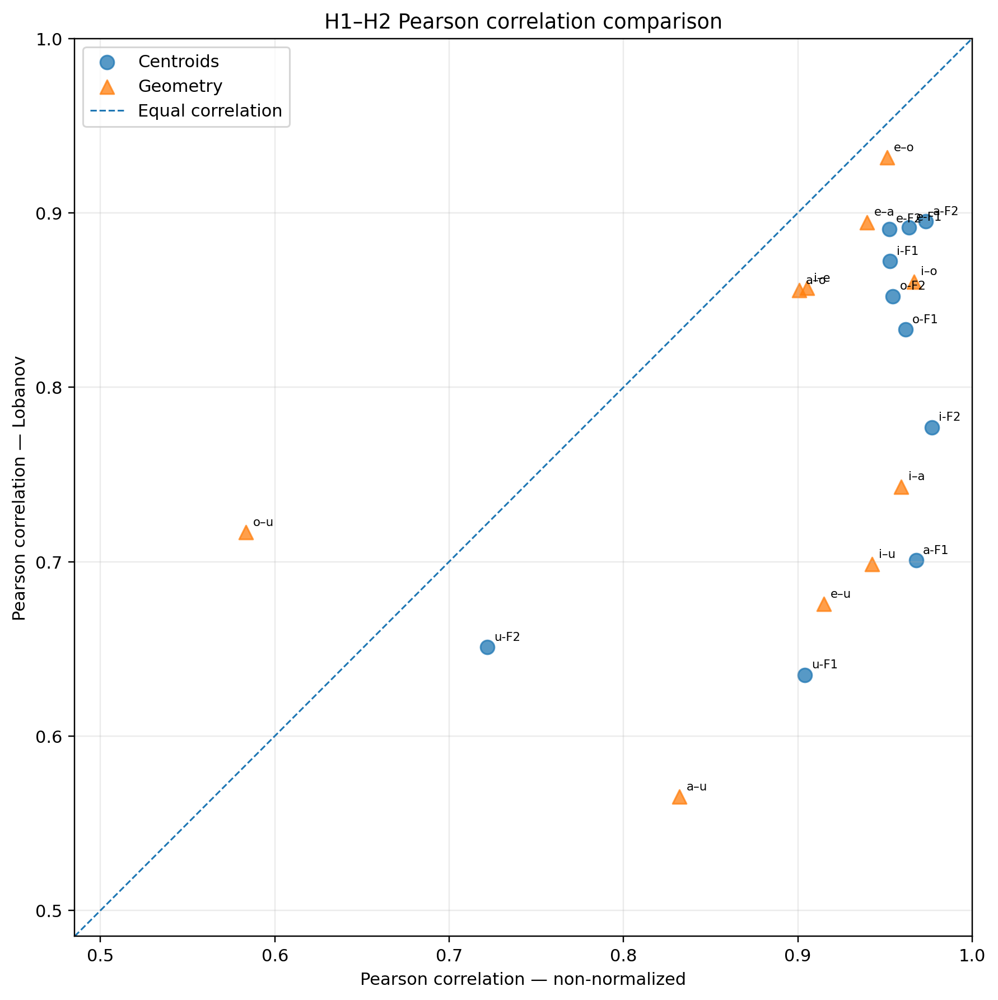
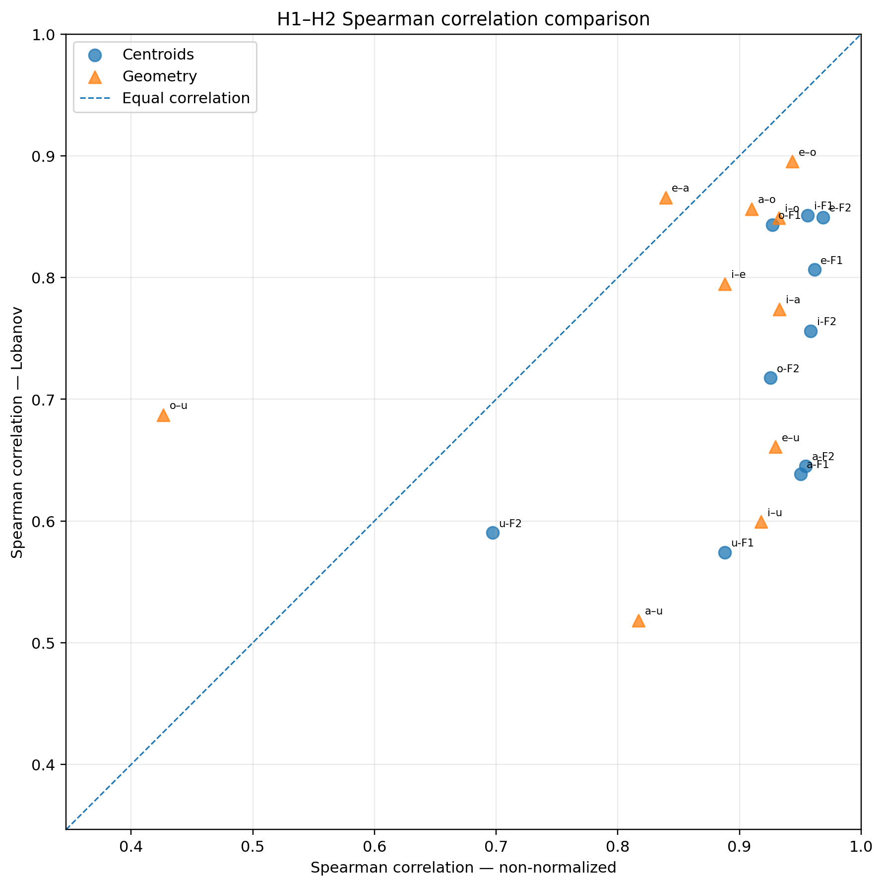

This report compares the split-half stability of vowel centroids and vowel-space geometry before and after Lobanov normalization. For each feature, the H1 values across speakers were correlated with the corresponding H2 values from the same speakers.
/home/pires/projects/speech-research/results/all_audio_half_region_profiles_level80
/home/pires/projects/speech-research/results/all_audio_half_region_profiles_lobanov_median_centroids
| Feature block | Number of features | Median Pearson — Hz | Median Pearson — Lobanov | Median Spearman — Hz | Median Spearman — Lobanov | Features with higher Pearson after Lobanov | Features with higher Spearman after Lobanov |
|---|---|---|---|---|---|---|---|
| Centroids | 10 | 0.958 | 0.843 | 0.952 | 0.737 | 0 | 0 |
| Geometry | 10 | 0.927 | 0.799 | 0.914 | 0.785 | 1 | 2 |
Each cell shows the H1–H2 correlation for one acoustic feature.

Points above the diagonal have higher Pearson correlation after Lobanov normalization. Points below the diagonal are more stable in the non-normalized representation.

Points above the diagonal preserve speaker ranking better after Lobanov normalization. Points below the diagonal preserve ranking better before normalization.

Values in brackets are 95% paired-speaker bootstrap confidence intervals. A positive difference means that the Lobanov correlation is higher.
| Feature block | Feature | N speakers | Pearson — Hz | Pearson — Lobanov | Pearson Δ (Lobanov − Hz) |
Pearson comparison | Pearson Hz FDR q | Pearson Lobanov FDR q | Spearman — Hz | Spearman — Lobanov | Spearman Δ (Lobanov − Hz) |
Spearman comparison | Spearman Hz FDR q | Spearman Lobanov FDR q |
|---|---|---|---|---|---|---|---|---|---|---|---|---|---|---|
| Centroids | /a/ F1 centroid | 43 | 0.968 [0.930, 0.988] | 0.701 [0.488, 0.842] | -0.267 [-0.470, -0.134] | Non-normalized higher | <0.001 | <0.001 | 0.950 [0.862, 0.986] | 0.639 [0.395, 0.808] | -0.311 [-0.542, -0.148] | Non-normalized higher | <0.001 | <0.001 |
| Centroids | /a/ F2 centroid | 43 | 0.973 [0.930, 0.990] | 0.895 [0.607, 0.955] | -0.078 [-0.335, -0.032] | Non-normalized higher | <0.001 | <0.001 | 0.955 [0.900, 0.975] | 0.645 [0.376, 0.824] | -0.309 [-0.571, -0.120] | Non-normalized higher | <0.001 | <0.001 |
| Centroids | /e/ F1 centroid | 43 | 0.964 [0.937, 0.982] | 0.892 [0.795, 0.944] | -0.072 [-0.170, -0.018] | Non-normalized higher | <0.001 | <0.001 | 0.962 [0.906, 0.985] | 0.806 [0.614, 0.916] | -0.155 [-0.340, -0.039] | Non-normalized higher | <0.001 | <0.001 |
| Centroids | /e/ F2 centroid | 43 | 0.952 [0.926, 0.977] | 0.891 [0.769, 0.952] | -0.062 [-0.192, 0.003] | No clear difference | <0.001 | <0.001 | 0.969 [0.923, 0.986] | 0.849 [0.694, 0.930] | -0.119 [-0.269, -0.023] | Non-normalized higher | <0.001 | <0.001 |
| Centroids | /i/ F1 centroid | 43 | 0.953 [0.916, 0.978] | 0.872 [0.789, 0.930] | -0.081 [-0.167, -0.015] | Non-normalized higher | <0.001 | <0.001 | 0.956 [0.890, 0.982] | 0.851 [0.707, 0.927] | -0.105 [-0.245, -0.007] | Non-normalized higher | <0.001 | <0.001 |
| Centroids | /i/ F2 centroid | 43 | 0.977 [0.949, 0.991] | 0.777 [0.619, 0.879] | -0.200 [-0.360, -0.086] | Non-normalized higher | <0.001 | <0.001 | 0.959 [0.887, 0.987] | 0.756 [0.534, 0.881] | -0.203 [-0.429, -0.052] | Non-normalized higher | <0.001 | <0.001 |
| Centroids | /o/ F1 centroid | 43 | 0.962 [0.931, 0.981] | 0.833 [0.731, 0.909] | -0.129 [-0.232, -0.049] | Non-normalized higher | <0.001 | <0.001 | 0.927 [0.822, 0.974] | 0.843 [0.720, 0.914] | -0.084 [-0.209, 0.033] | No clear difference | <0.001 | <0.001 |
| Centroids | /o/ F2 centroid | 43 | 0.955 [0.912, 0.977] | 0.852 [0.712, 0.925] | -0.102 [-0.238, -0.027] | Non-normalized higher | <0.001 | <0.001 | 0.926 [0.844, 0.962] | 0.718 [0.473, 0.875] | -0.208 [-0.442, -0.042] | Non-normalized higher | <0.001 | <0.001 |
| Centroids | /u/ F1 centroid | 43 | 0.904 [0.841, 0.949] | 0.635 [0.390, 0.800] | -0.269 [-0.512, -0.100] | Non-normalized higher | <0.001 | <0.001 | 0.888 [0.782, 0.938] | 0.574 [0.290, 0.782] | -0.314 [-0.589, -0.091] | Non-normalized higher | <0.001 | <0.001 |
| Centroids | /u/ F2 centroid | 43 | 0.722 [0.532, 0.847] | 0.651 [0.411, 0.815] | -0.071 [-0.282, 0.111] | No clear difference | <0.001 | <0.001 | 0.697 [0.464, 0.847] | 0.590 [0.322, 0.776] | -0.107 [-0.370, 0.129] | No clear difference | <0.001 | <0.001 |
| Geometry | /a–o/ distance | 43 | 0.901 [0.826, 0.957] | 0.856 [0.738, 0.936] | -0.045 [-0.138, 0.033] | No clear difference | <0.001 | <0.001 | 0.910 [0.818, 0.950] | 0.856 [0.701, 0.940] | -0.054 [-0.198, 0.061] | No clear difference | <0.001 | <0.001 |
| Geometry | /a–u/ distance | 43 | 0.832 [0.691, 0.916] | 0.565 [0.321, 0.746] | -0.267 [-0.460, -0.120] | Non-normalized higher | <0.001 | <0.001 | 0.817 [0.659, 0.909] | 0.518 [0.217, 0.742] | -0.299 [-0.565, -0.073] | Non-normalized higher | <0.001 | <0.001 |
| Geometry | /e–a/ distance | 43 | 0.940 [0.766, 0.979] | 0.895 [0.811, 0.944] | -0.045 [-0.110, 0.101] | No clear difference | <0.001 | <0.001 | 0.839 [0.683, 0.933] | 0.866 [0.744, 0.929] | 0.027 [-0.100, 0.165] | No clear difference | <0.001 | <0.001 |
| Geometry | /e–o/ distance | 43 | 0.951 [0.914, 0.979] | 0.932 [0.871, 0.966] | -0.019 [-0.065, 0.005] | No clear difference | <0.001 | <0.001 | 0.944 [0.878, 0.969] | 0.895 [0.773, 0.955] | -0.048 [-0.154, 0.027] | No clear difference | <0.001 | <0.001 |
| Geometry | /e–u/ distance | 43 | 0.915 [0.866, 0.950] | 0.676 [0.478, 0.803] | -0.239 [-0.411, -0.127] | Non-normalized higher | <0.001 | <0.001 | 0.930 [0.844, 0.964] | 0.661 [0.412, 0.820] | -0.269 [-0.501, -0.100] | Non-normalized higher | <0.001 | <0.001 |
| Geometry | /i–a/ distance | 43 | 0.959 [0.900, 0.983] | 0.743 [0.563, 0.869] | -0.216 [-0.375, -0.095] | Non-normalized higher | <0.001 | <0.001 | 0.933 [0.842, 0.974] | 0.774 [0.582, 0.901] | -0.159 [-0.336, -0.013] | Non-normalized higher | <0.001 | <0.001 |
| Geometry | /i–e/ distance | 43 | 0.905 [0.805, 0.956] | 0.857 [0.749, 0.919] | -0.048 [-0.173, 0.071] | No clear difference | <0.001 | <0.001 | 0.888 [0.764, 0.954] | 0.795 [0.615, 0.894] | -0.093 [-0.288, 0.075] | No clear difference | <0.001 | <0.001 |
| Geometry | /i–o/ distance | 43 | 0.967 [0.918, 0.987] | 0.861 [0.755, 0.917] | -0.106 [-0.214, -0.034] | Non-normalized higher | <0.001 | <0.001 | 0.932 [0.843, 0.974] | 0.849 [0.715, 0.922] | -0.083 [-0.221, 0.035] | No clear difference | <0.001 | <0.001 |
| Geometry | /i–u/ distance | 43 | 0.943 [0.891, 0.970] | 0.698 [0.469, 0.843] | -0.244 [-0.481, -0.091] | Non-normalized higher | <0.001 | <0.001 | 0.918 [0.821, 0.961] | 0.599 [0.322, 0.795] | -0.318 [-0.590, -0.104] | Non-normalized higher | <0.001 | <0.001 |
| Geometry | /o–u/ distance | 43 | 0.584 [0.256, 0.783] | 0.717 [0.516, 0.849] | 0.133 [-0.102, 0.437] | No clear difference | <0.001 | <0.001 | 0.426 [0.111, 0.693] | 0.687 [0.435, 0.852] | 0.261 [-0.074, 0.604] | No clear difference | 0.004 | <0.001 |